품질경영산업기사 (2017-05-07 기출문제)
1과목: 실험계획법
1. 다음은 반복 없는 2요인실험의 분산분석표이다. 유의수준 0.⑤에서 가설 검정의 결과로 맞는 것은?
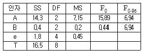
- 요인 A와 B의 교호 작용은 존재한다.
- 요인 A의 수준에 따라 의미 있는 차이가 있다.
- 요인 A의 수준에 따라 의미 있는 차이가 없다.
- 요인 B의 수준에 따라 의미 있는 차이가 있다.
(정답률: 62%)

2. ℓ개의 수준에서 각각 m번 반복한 실험 결과인 xij에 대해 다음과 같은 모형을 설정하였다. 오차분산  의 추정값으로 맞는 것은? (단, eij~N(0,
의 추정값으로 맞는 것은? (단, eij~N(0,
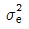
이며, 서로 독립이다.)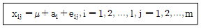
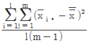
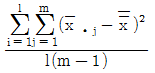
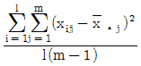
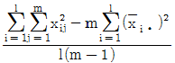
(정답률: 43%)
3. 1요인실험의 단순회귀 분산분석표를 작성한 결과 다음과 같은 데이터를 얻었다. 나머지 회귀(Sr)의 값은?
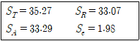
- 0.02
- 0.22
- 2.20
- 2.46
(정답률: 52%)
4. 반복이 있는 모수모형 2요인실험을 하여 다음과 같은 분산분석표의 일부를 얻었다. 요차의 순제곱합(Se′)을 구하면?
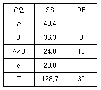
- 9
- 27
- 32
- 39
(정답률: 54%)
5. ℓ개의 수준에서 반복수가 각각 mi(i=1, 2,1 … ℓ)인 변량모형의 1요인실험인 경우, 급내 분산의 불편분산의 추정값으로 맞는 것은?
- Ve
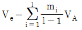
- Ve+(ℓ-1)VA
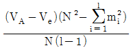
(정답률: 53%)
6. 3×3라틴방격법 실험으로 A, B, C3요소인의 분산분석표를 작성하려고 할 때, 설명으로 맞는 것은?
- 총자유도(vT)는 9이다.
- E(VB)는
 이다.
이다. - 요인 A의 자유도는 3이다.
- 요인 A의 검정통계량은
 이다.
이다.
(정답률: 58%)
7. 반복이 있는 2요인실험(모수모형)의 경우 데이터의 구조식은? (단, μ는 총평균, ai는 Ai의 효과, bj는 Bj의 효과, (ab)ij는 교호작용 A×B 의 효과, eijk는 오차이다.)
- xijk=μ+ai+bj+eijk
- xijk=μ+ai+(ab)ij+eijk
- xijk=μ+bj(ab)ij+eijk
- xijk=μ+ai+bj+(ab)ij+eijk
(정답률: 65%)
8. 부적합품 여부에 대한 동일성에 관한 실험에서 적합품이면 0, 부적합품이면 1의 값을 주기로 하고 4대의 기계에서 나오는 200개씩의 제품에 대해서 부적합품 여부를 실험하여 그 결과로 아래와 같은 분산분석표를 구하였다. 다음 분산분석표의 일부자료를 이용하여 기계간의 부적합품률의 차에 관한 가설검정을 실시했을 때 판정기준으로 맞는 것은?
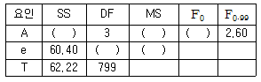
- F0＞F0.99 (3, ve)이므로 기계간의 부적합품률의 차는 대단히 유의하다.
- F0＜F0.99 (3, ve)이므로 기계간의 부적합품률의 차는 대단히 유의하다.
- F0＞F0.99 (ve, 3)이므로 기계간의 부적합품률의 차는 대단히 유의하다.
- F0＜F0.99 (ve, 3)이므로 기계간의 부적합품률의 차는 대단히 유의하다.
(정답률: 66%)
9. 직교배열표의 장점이 아닌 것은?
- 실험 데이터로부터 요인 제곱합이 계산이 용이하다.
- 일부실시법, 분할법, 교락법 등의 배치를 쉽게 할 수 있다.
- 실험의 크기를 늘리지 않고도 실험에 많은 용인을 고려할 수 있다.
- 여러 요인의 조합조건에서 실험하므로 일반적으로 오차가 작다.
(정답률: 60%)
10. 요인 A, B가 각각 3수준, 4수준인 난괴법 실험을 하여 아래와 같은 분산분석표를 작성하였을 때, 요인 B에 대한 모분산의 추정치는 약 얼마인가? (단, A는 모수요인이며, B는 변량요인이다.)
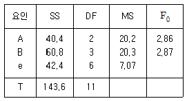
- 1.76
- 2.40
- 3.09
- 4.41
(정답률: 55%)
11. 요인 A의 수준수 ℓ, 요인 B의 수준수 m, 각 반복수가 r인 반복이 있는 2요인실험에서 A와 B의 교호작용의 자유도는?
- ℓm
- ℓ(m-1)
- (ℓ-1)(m-1)
- ℓm(r-1)
(정답률: 65%)
12. 다음은 철분에 함유된 함량을 측정한 데이터와 분산분석표이다. 유의수준 0.⑤로 μ(A1)을 구간추정하면 약 얼마인가? (단, t0.95(14)＝1.761, t0.975(14)＝2.145, t0.95(3)＝.353, t0.975(3)＝3.182이다.)
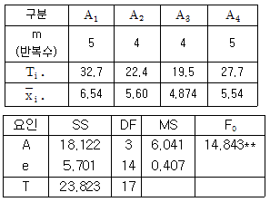
- 5.632≤μ(A1)≤7.448
- 5.869≤μ(A1)≤7.211
- 5.928≤μ(A1)≤7.152
- 6.038≤μ(A1)≤7.042
(정답률: 45%)
13. Y공장에서 제품의 인장강도를 높이기 위하여 요인 A를 온도로 채택하여 A1(120℃), A2(140℃), A3(160℃), A4(180℃)로 하고, 각 수준의 반복수를 4회로 실험하였더니 요인 A가 고도로 유의적이었다면, 아래의 데이터를 보고
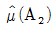
를 신뢰율 95%로 구간 추정하면 약 얼마인가? (단, t0.975(12)＝2.179, t0.975(15)＝2.131, t0.95(12)＝1.78이다.)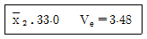
- 33±1.662
- 33±1.988
- 33±2.032
- 33±2.347
(정답률: 61%)
14. 아래의 LS(27)형 직교배열표에서 3열과 5열에 주효과 A와 B를 배치한다면 교호작용이 나타나는 열은 몇 열인가?
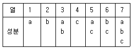
- 1열
- 2열
- 6열
- 7열
(정답률: 70%)
15. 채택된 모수요인으로서 몇 개의 수준을 설정하고, 그 가운데서 최적의 수준을 선택한 후 평균의 해석을 위해 취한 요인은?
- 제어요인
- 블럭요인
- 표시요인
- 보조요인
(정답률: 52%)
16. 다음은 모수요인 A(2수준)와 모수요인 B(2수준)를 반복 없는 2요인실험한 결과를 나타낸 것이다. 요인 B의 제곱합(SB)은 약 얼마인가?
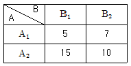
- 2.04
- 2.25
- 2.42
- 2.52
(정답률: 60%)
17. 다음은 반복수가 일정하지 않은 1요인실험의 분산분석표이다. F0(검정통계량)의 값은 약 얼마인가?
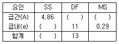
- 2.14
- 4.43
- 6.19
- 8.38
(정답률: 63%)
18. 반복 없는 2요인실험을 하는데 결측치가 1개 있어 Yates의 방법으로 계산하여 추정한 후 분석을 실시하였다. 요인 A가 4수준, 요인 B가 3수준이라면 총자유도는 얼마인가?
- 9
- 10
- 11
- 12
(정답률: 69%)
19. 반복이 없는 2요인실험인 경우의 A는 모수요인이고, B는 변량요인이라고 할 때, 설명 중 틀린 것은?
- 난괴법의 형태이다.
- ai는 N(0,
 )를 따른다.
)를 따른다. - 이런 경우에는 교호작용이 존재하지 않는다.
- 모수요인인 경우
 이고, 변량요인이 경우
이고, 변량요인이 경우  0이다.
0이다.
(정답률: 60%)
20. 라틴방격법의 특징이 아닌 것은?
- 일반적으로 모수요인을 사용한다.
- 주효과를 분석하기 위한 배분이다.
- 요인의 수준수와 반복수가 동일하지 않아도 된다.
- 행과 열에 숫자 또는 문자의 배열이 중복됨이 없어야 한다.
(정답률: 80%)
2과목: 통계적품질관리
21.
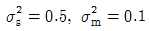
인 경우 시료 1개를 샘플링하여 2회 측정했을 때, 평균치의 분산(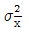
)은 얼마인가? (단,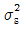
＝샘플링 오차분산,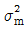
＝분석 오차분산이다.)- 0.30
- 0.55
- 0.66
- 0.77
(정답률: 61%)
22. 시료부적합품률(p)을 활용하여 모부적합품률(P)의 양측 신뢰구간을 추정하려고 할 때, 신뢰구간의 하한값을 구하는 계산식은? (단, n은 충분히 크고 정규분포를 따른다.)
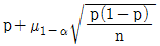
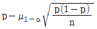
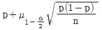
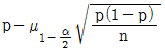
(정답률: 70%)
23. ∑c＝260, ∑n＝52, n＝10으로부터 계산한 u관리도의 UCL값은 약 얼마인가?
- 7.12
- 7.62
- 8.12
- 8.62
(정답률: 48%)
24.  관리도에서 관리계수 (Cf)가 1.6인 경우 공정의 관리상태를 추정한 것으로 맞는 것은?
관리도에서 관리계수 (Cf)가 1.6인 경우 공정의 관리상태를 추정한 것으로 맞는 것은?
- 급내변동이 크다.
- 급간변동이 크다.
- 대체로 관리상태이다.
- 군구분이 잘못되었다.
(정답률: 46%)
25. 표준값이 주어져 있지 않은 경우 n＝5일 때, s관리도를 작성하기 위한 계수 B4는 약얼마인가? (단, n＝5일 때, d2＝2.326, d3＝0.864, c4＝0.9400, c5＝0.3412이다.)
- 1.970
- 2.089
- 2.266
- 2.568
(정답률: 57%)
26. 어떤 공정의 제품 중 30개를 샘플로 취하여 데이터를 조사해보니 x＝60.35, s＝6.20이었다. 변동계수는 약 얼마인가?
- 0.15%
- 1.06%
- 10.27%
- 25.50%
(정답률: 72%)
27. np관리도의 데이터시트에서 다음 값을 얻었다. np관리도의 UCL값은 약 얼마인가?
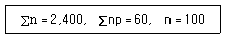
- －2.184
- 0.939
- 4.061
- 7.184
(정답률: 49%)
28. 검사특성곡선에 관한 설명으로 틀린 것은? (단, N은 로트의 크기, n은 시료의 크기, c는 합격판정개수이고, N/n≥10이다.)
- n과 c일정할 때 N의 크기가 증가하여도 곡선의 모양은 큰 변화가 없다.
- N, n, c를 일정하게 비례시켰을 경우에는 곡선의 모양은 크게 변하지 않는다.
- N과 n을 일정하게 하고 c를 늘리면 곡선은 대체로 오른쪽으로 완만하게 되어간다.
- N과 c를 일정하게 하고 n을 증가시키면 생산자 위험은 증가하고, 소비자 위험은 감소한다.
(정답률: 53%)
29. 모상관계수를 ρ, 표본상관계수를 r이라 할 때, H0:ρ＝0를 검정하기 위한 검정 통계량은?
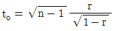
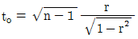
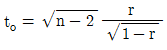
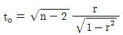
(정답률: 56%)
30. 이항분포에 바탕을 둔 관리도로만 구성된 것은?
- p관리도, u관리도
- X관리도, R관리도
- u관리도, c관리도
- p관리도, np관리도
(정답률: 63%)
31. M성분의 평균치가 97% 이상인 로트는 합격시키고 94% 이하인 로트는 불합격으로 하고 싶다. 로트의 표준편차σ＝2.0%, α＝0.⑤, β＝0.10을 만족하는 시료의 크기 n은 얼마인가? (단, Kα＝1.645, Kβ＝1.282이다.)
- 4개
- 6개
- 16개
- 36개
(정답률: 50%)
32. χ2분포가 적용되는 경우로 맞는 것은?
- 모평균의 신뢰한계 추정에 사용된다.
- 모분산의 신뢰한계 추정에 사용된다.
- 모결점수의 신뢰한계 추정에 사용된다.
- 모부적합품률의 신뢰한계 추정에 사용된다.
(정답률: 69%)
33. 확률에 관한 사항 중 틀린 것은?(오류 신고가 접수된 문제입니다. 반드시 정답과 해설을 확인하시기 바랍니다.)
- P(A|B)=P(A∩B(/P(A)
- P(A∪b)=P(A)+P(B)-P(A∩B)
- P(A)+P(B)=1(단, A는 A의 여사상이다.)
- P(A∩B=P(A)∙P(B) (단, 사상 A, B는 서로 독립이다.)
(정답률: 57%)
34. 어떤 모집단에서 랜덤하게 시료를 5개 뽑아 측정한 결과 표본평균이 4.82, 표본의 분산이 0.822로 나타났다. 모평균(μ)의 95% 신뢰구간은 약 얼마인가? (단, t0.975(4)=2.776, t0.95(4)=2.132, t0.975(5)=2.571, t0.95(5)=2.015이다.)
- 3.694≤μ≤5.946
- 3.778≤μ≤5.862
- 3.800≤μ≤5.840
- 3.875≤μ≤5.765
(정답률: 36%)
35. 계수형 샘플링검사 절차－제1부：로트별 합격품질한계(AQL)지표형 샘플링검사 방안(KS Q ISO 2859-1：2014)에서 수월한 검사가 보통 검사로 전환되는 경우에 해당되지 않는 것은?
- 생산이 불규칙
- 1로트가 불합격
- 전환점수가 30 이상
- 기타 조건에서 전환이 필요
(정답률: 66%)
36.
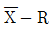
관리도에서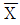
관리도의 관리한계에 대한 설명으로 틀린 것은? (단, 기준값이 주어지지 않은 경우이다.)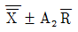
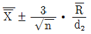
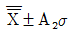
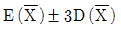
(정답률: 48%)
37. 검사의 목적이 아닌 것은?
- 품질정보를 제공한다.
- 우연원인을 제거한다.
- 고객에게 품질에 대한 안심감을 준다.
- 다음 공정이나 고객에게 부적합품이 넘어가는 것을 방지한다.
(정답률: 74%)
38. 통계적 검정을 하여 위험률 5%로 유의하다는 결론을 얻었다면 이와 의미가 동일한 것은?
- 신뢰율이 5%이다.
- 출현 확률이 5%이다.
- 제1종의 오류가 5%이다.
- 제2종의 오류가 10%이다.
(정답률: 69%)
39. 푸아송분포(Poisson distribution)를 적용하는 데 적합하지 않은 것은?
- 생수 한 병당의 무게
- 주당 발생하는 기계 고장건수
- 1m2당 옷감에 나타나는 부적합수
- 자동차 최종검사시 타나나는 부적합수
(정답률: 70%)
40. 모분산의 기각역에 대한 설명으로 틀린 것은?
- H1:σ2＜
 이면,
이면,  을 만족하면 H0 기각한다.
을 만족하면 H0 기각한다. - H1:σ2＞
 이면,
이면,  을 만족하면 H0 기각한다.
을 만족하면 H0 기각한다. - H1:σ2＜
 이면,
이면,  을 만족하면 H0 기각한다.
을 만족하면 H0 기각한다. - H1:σ2≠
 이면,
이면,  또는
또는  이면 H0 기각한다.
이면 H0 기각한다.
(정답률: 45%)
3과목: 생산시스템
41. 시간연구법에서 레이팅(rating) 또는 수행도 계수에 관한 설명으로 가장 적절한 것은?
- 작업의 관측시간을 의미한다.
- 작업시간 중에 발생되는 피할 수 없는 지연 등의 여유시간이다.
- 정상적인 페이스와 관측시간치를 비교하는 것이다.
- 훈련도, 작성, 작업의욕 등의 여러 측면의 평균적인 작업자의 표준작업방법에 따른 페이스이다.
(정답률: 45%)
42. 작업장의 배치에 있어서 다음 그림의 빗금 친 부분과 같이 작업자의 양팔의 상완을 몸통에 자연스럽게 붙이고 작업대 위에 부채꼴 형태의 원을 그릴 때 그 내부작업 영역을 무엇이라고 하는가?
- 정상작업영역
- 최대작업영역
- 최소작업영역
- 랜덤작업영역
(정답률: 68%)
43. 분산구매의 특징이 아닌 것은?
- 자주적 구매가 가능하다.
- 긴급수요의 경우에 유리하다.
- 구매수속을 신속히 처리할 수 있다.
- 대량구매로 가격과 거래조건이 유리하다.
(정답률: 75%)
44. 공장 내의 설비, 기계 등을 가장 효율적으로 배치, 배열하기 위한 장기적인 생산관리의 설계기능 중 하나는?
- 설비배치
- 작업설계
- 수요예측
- 설비보전
(정답률: 72%)
45. 단속생산시스템에 관한 설명으로 틀린 것은?
- 범용설비를 이용한다.
- 공정중심의 생산방식이다.
- 제품중심의 생산방식이다.
- 주문생산에 의해 이루어진다.
(정답률: 41%)
46. 1일 부하시간이 460분, 1일 가동시간이 400분, 1일 생산량을 300개라 할 때 성능가동률은 얼마인가? (단, 이론사이클타임：0.5분/개, 실제사이클타임：0.8분/개이다.)
- 27.5%
- 37.5%
- 47.5%
- 57.5%
(정답률: 44%)
47. 타이어를 만드는 공장에서 특정 부품에 대한 연간수요는 4,000개, 일회 주문비용은 2,000원, 연간단위당 재고유지비용은 100원으로 추산된다. 주문리드타임이 5일이라면 경제적 주문량(EOQ)은?
- 100개
- 200개
- 300개
- 400개
(정답률: 54%)
48. 설비고장이 발생하기 전에 미리 점검 내지 보전활동을 하는 방식은?
- 예방보전(PM)
- 사후보전(BM)
- 개량보전(CM)
- 보전예방(MP)
(정답률: 70%)
49. 두 개의 공정기호를 이용하여 조립의 순서를 표시하는 작업공정도(operation processchart)에서 사용하는 공정기호는 어느 것인가?
- 운반
- 정체
- 검사
- 대기
(정답률: 48%)
50. 다음은 단순이동평균법을 설명한 내용으로 괄호 A, B에 들어갈 내용으로 맞는 것은?
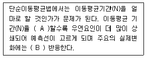
- A：짧게, B：빨리
- A：짧게, B：늦게
- A：길게, B：빨리
- A：길게, B：늦게
(정답률: 62%)
51. 1일 생산량이 1,000개이고, 실동시간은 400분이며, 최종 공정부적합품률은 5%이다. 피치타임은 약 몇 분인가?
- 0.24분
- 0.38분
- 0.42분
- 0.83분
(정답률: 48%)
52. MRP시스템의 적용이 가장 효과적인 경우는?
- 최종제품이 고가인 경우
- 생산시스템의 특성에 상관없이 모든 경우
- 품목들에 대한 수요가 최종제품의 수요와 독립적인 경우
- 최종제품이 복잡하고 많은 부품 또는 자재들의 조합으로 이루어진 경우
(정답률: 79%)
53. PERT기법에서 낙관적 소요시간을 a, 비관적 소요시간을 b, 정상적 소요시간을 m이라고 하면, 어떤 작업에 대한 기대평균시간(expected time)은?
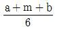
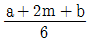
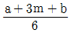
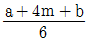
(정답률: 70%)
54. 통제단계에서 실제의 능력과 부하를 조사하여 양자가 균형을 이루도록 조정하는 것은?
- 일정관리
- 자재관리
- 여력관리
- 절차관리
(정답률: 68%)
55. A, B, C, D 4개의 작업은 모두 공정1을 먼저 거친 다음에 공정2를 거친다. 최종작업이 공정2에서 완료되는 시간을 최소화하기 위한 존슨의 방법에 의한 작업순서로 맞는 것은?
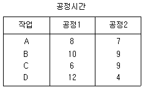
- C → B → A → D
- A → C → B → D
- C → A → B → D
- D → A → B → C
(정답률: 54%)
56. 작업자에 의해 수행되는 각각의 작업내용에 주안점을 두고 작업의 효율적 요소와 비효율적 요소를 심도 있게 분석하는 방법은?
- 작업분석
- 작업측정
- 공정분석
- 작업보상
(정답률: 75%)
57. JIT(Just In Time)의 특징이 아닌 것은?
- 평준화
- Push 시스템
- 낭비제로
- 간판(Kanban)방식
(정답률: 78%)
58. 생산ㆍ재무ㆍ유통ㆍ인사ㆍ회계 등의 정보시스템을 하나로 통합하여 기업의 모든 자원을 운영관리하는 시스템은?
- 자재소요계획(Material Requirements Planning)
- 총괄생산계획(Aggregate Production Planning)
- 전사적자원관리계획(Enterprise Resources Planning)
- 능력소요계획(Capacity Requirements Planning)
(정답률: 73%)
59. 포드 시스템에 해당되는 것은?
- 과업별 관리
- 고임금, 저가격
- 작업자 중심
- 고임금, 저노무비
(정답률: 60%)
60. 시간연구법에서 작업 측정 시 스톱워치의 사용법에 대한 설명으로 틀린 것은?
- 계속법은 소톱워치를 작동하여 관측 중에는 스톱워치를 중지시키지 않는 방법이다.
- 관측자는 자신의 눈과 소톱워치와 작업자의 작업점이 한 평면대에 될 수 있는 한, 삼각형이 되게 할 필요가 있다.
- 반복법은 각 요소작업의 분기점에서 용두(스위치)를 누르고, 스톱워치의 바늘을 0의 위치로 되돌리는 방법이다.
- 시간관측은 작업자의 행동을 관찰하면서 스톱워치의 눈금을 읽고, 관측용지에 기입하는 3가지 작업을 동시에 행한다.
(정답률: 63%)
4과목: 품질경영
61. 공차가 같은 5개의 부품을 조립하였을 때, 조립품의 공차가 ±0.785였다. 각 부품의 공차는 약 얼마인가?
- 0.123
- 0.351
- 0.396
- 0.886
(정답률: 50%)
62. 목표를 달성하기 위해 필요한 수단과 방책을 계통적으로 작성함으로써 목표달성을 위한 최적수단을 추구해 나가는 방법은?
- PDPC법
- 계통도법
- 친화도법
- 연관도법
(정답률: 87%)
63. 기업의 6시그마 개선 프로젝트에 대한 추진 리더로서 혁신활동에 전념하는 추진요원은?
- 블랙벨트(BB)
- 그린벨트(GB)
- 챔피언(Champion)
- 마스터 블랙벨트(MBB)
(정답률: 73%)
64. 생산기업의 표준화 실시가 고객에게 미치는 효과로 가장 거리가 먼 것은?
- 품질을 보증함으로써 제품에 대한 신뢰도를 제고시킨다.
- 품종이 단순화됨으로써 기호에 맞는 것을 자유롭게 선택할 수 있다.
- 표준화된 물품은 호환성이 높기 때문에 구입된 물품의 교체, 수리가 용이하다.
- 품질의 균일화되고, 신뢰성이 보장되므로 공급자와 고객이 상호이익을 가질 수 있다.
(정답률: 71%)
65. 품질에 대한 책임은 전 부서의 공동책임이기 때문에 무책임이 되기 쉽다. 이에 각 부서별로 품질에 대해 책임지는 업무 내용으로 틀린 것은?
- 품질코스트 분석은 회계, 품질관리 부서가 관계가 깊다.
- 공정 내 품질측정은 생산현장보다는 설계, 제조기술 분야가 관계가 깊다.
- 품질수준 결정에는 공장장, 판매, 설계, 품질관리 부서 등이 관계가 깊다.
- 불만데이터 수집 및 분석은 판매, 설계, 구매, 생산, 품질관리 부서가 관계가 깊다.
(정답률: 69%)
66. 부주의, 착각 등에 의해 실수가 발생하지 않도록 또는 실수가 생기더라도 곧 알 수 있도록 하는 구체적이고 기계적인 방지책은?
- fool proof
- derating
- methods study
- value engineering
(정답률: 79%)
67. 사내표준화의 요건에 관한 설명으로 틀린 것은?
- 향후 추진업무를 중심으로 할 것
- 정확·신속하게 개정, 향상시킬 것
- 직관적으로 보기 쉬운 표현을 할 것
- 장기적인 방침 및 체계 하에서 추진할 것
(정답률: 66%)
68. 사내계측관리 전개방법 중 집중관리방식의 특징이 아닌 것은?
- 관리방법이 통일된다.
- 계측기술의 축적전개가 이룩된다.
- 필요할 때마다 즉시 사용할 수 있다.
- 획일화된 방법이 되기 쉽고, 복적에 적합하지 못한 경우가 있다.
(정답률: 66%)
69. 품질특성은 참특성과 대응특성으로 나누어진다. 참특성을 설명한 것으로 맞는 것은?
- 표준에 명시된 특성
- 소비자가 요구하는 품질특성
- 승용차의 경우 길이, 폭, 넓이, 색상 등
- 품질특성을 표현하기 위한 객관적 조건
(정답률: 56%)
70. 수집된 자료 하나 하나의 관측값들을 나타내면서 자료의 분포를 보여줄 수 있는 장점을 가지고 있는 것은?
- 원그래프
- 꺽은선그래프
- 막대그래프
- 줄기－잎 그림
(정답률: 58%)
71. 품질비용에 관한 설명으로 틀린 것은?
- 무결점 견해에 의하면 품질수준이 높아짐에 따라 품질비용은 낮아진다.
- 실패비용은 내부 실패비용과 외부 실패비용으로 나눌 수 있다.
- 파이겐바움에 의하면 실패비용은 총품질비용의 70% 정도 차지한다.
- 내부 실패비용은 그 중요성이 외부 실패비용보다 상대적으로 날로 증가하고 있다.
(정답률: 56%)
72. 국가규격의 약어가 아닌 것은?
- KS
- BS
- DIN
- ASTM
(정답률: 69%)
73. 규격의 폭을 T, 표준편차를 라고 할 때, 공정능력지수(CP)를 바르게 표현한 것은?
- T/6σ
- T/3σ
- 3σ/T
- 6σ/T
(정답률: 70%)
74. 계량의 기본단위에 대한 설명으로 틀린 것은?
- 길이의 계량 단위는 미터(m)로 한다.
- 물질의 계량 단위는 몰(mol)로 한다.
- 광도의 계량 단위는 칸델라(cd)로 한다.
- 평면각의 계량 단위는 라디안(rd)으로 한다.
(정답률: 71%)
75. 현실적인 면에서 실현되는 실제 운전상태의 현실능력으로 시간적 변동 이외에, 원재료나 작업자의 대체 등으로 기인하는 변동까지 고려한 공정능력은?
- 정적 공정능력
- 단기 공정능력
- 동적 공정능력
- 장기 공정능력
(정답률: 81%)
76. 고객 및 고객만족경영에 관한 설명 중 틀린 것은?
- 고객이란 결국 회사 내외에서 나의 일의 결과로 사용하는 사람이라고 정의할 수 있다.
- 고객만족 경영이란 결국 고객의 입장에 서서 객관적으로 욕구를 창출시켜 나가는 경영활동이다.
- 흔히 고객이란 외부고객만 지칭하였으나 CS경영에서는 내부고객도 모두 포함하여 포괄적으로 고객이라 지칭한다.
- 고객은 크게 두 가지로 나눌 수 있는데 하나는 가치를 창출하는 외부고객이고, 하나는 가치를 구매하여 활용하는 내부고객이다.
(정답률: 60%)
77. 제조물 책임 방어(PLD) 대책 중 PL사고 발생 전에 수립하는 대책으로 볼 수 없는 것은?
- 소송 대리인의 선임
- 문서관리 체제의 정비
- 제조물 책임 대응체제의 정비
- 제조물 책이보험(생산물 배상 책임보험의 가입)
(정답률: 75%)
78. 품질평가 시 시장에 대한 적합성, 사회에 대한 적합성, 기업능력에 대한 적합성 등에 대해 평가하는 단계는?
- 표준화
- 제조단계
- 제품개발단계
- 검사단계
(정답률: 52%)
79. 품질경영의 발전단계로 맞는 것은?
- 전략적 품질경영 → 검사 → 품질보증 → 통계적 품질관리
- 통계적 품질관리 → 검사 → 품질보증 → 전략적 품질경영
- 검사 → 통계적 품질관리 → 품질보증 → 전략적 품질경영
- 품질보증 → 전략적 품질경영 → 검사 → 통계적 품질관리
(정답률: 80%)
80. 표준의 서식과 작성방법1(KA A 0001:2015)의 표준의 종류에서 “어떤 표준을 적용하는데 있어서 참조하는 편이 좋은 표준(국제표준, 국가표준, 단체표준 등) 및 기타 문서”를 의미하는 표준을 무엇이라고 하는가?
- 인용표준
- 제품표준
- 관련표준
- 시험표준
(정답률: 52%)